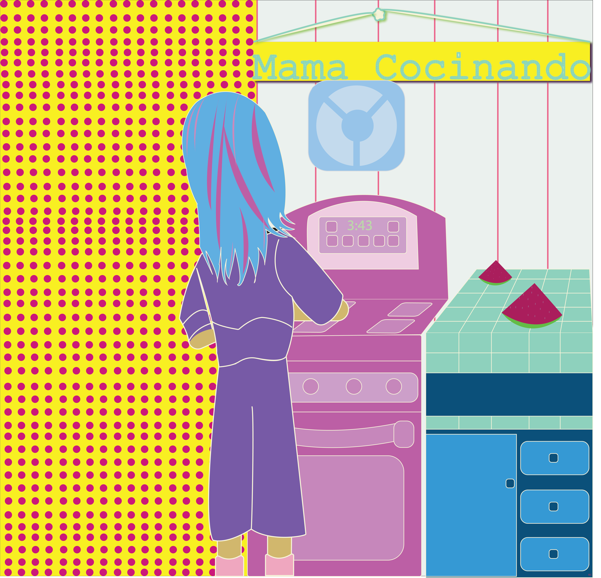

INTIMACY | LITLE BIG WORLD | WEIRDOS CHAT | SALTY | BUTTERCUP | HOME | QUEEN FLOWER | IT | LOST | ODE TO | TEMPTRESS OF THE TEMPTEST | PIZZAmania | Chupacabra| MAMA| Wakwak|

Mama Cocinando,
mom cooking, is a thank you too my mom for being a mom. These weeks of quarantine I
moved back in with my parents after years of being on my own. It was a realization, where it is sad
to say that what it took for many of us to spend time with family was an epidemic. Between work,
school, and not living in the same city visiting became difficult. Once quarantined in Stockton I sat
on the table on a hot April day as my mom ran around in the kitchen getting dinner ready. I sat
listening to a conference call from work and decided to make a sketch of my mom. Later I transferred
the sketch into Illustrator to make an illustration. I used bright shades of colors because I love the
aura they create. Realistic colors make reality feel too real. With different colors it's as if I enter
a different space. It allows for a lively piece. I have learned to appreciate and love everyday uniquely.